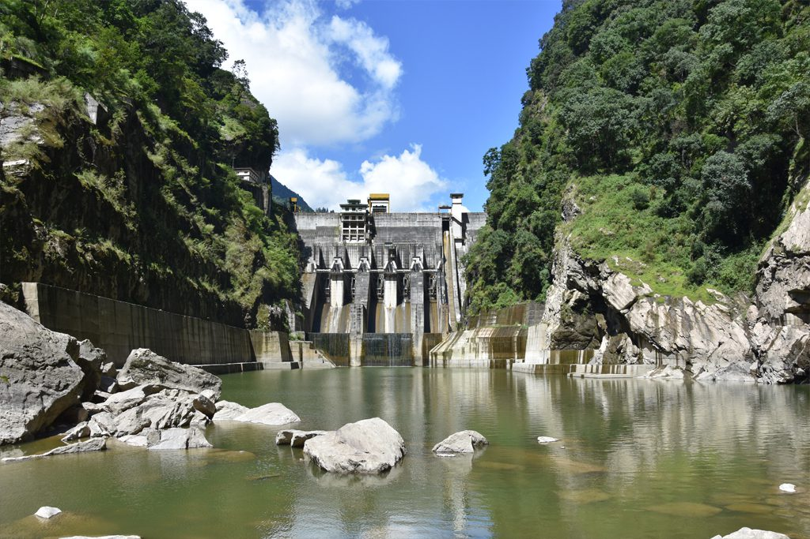

CHUKHA HYDROPOWER
DGPC, in fulfilling its vision and mission, plays a major role in supporting the communities through its corporate social responsibility (CSR) initiatives. DGPC continues to improve the quality of life of the communities through long-term value creation for all stakeholders. This objective is for aligning DGPC’s CSR with Bhutan’s overarching development policy of “Gross National Happiness”. The 336 MW Chhukha Hydropower Plant (CHP), located at Chhukha dzongkhag in the south-western part of Bhutan, is the oldest power plant (profit centre) of Druk Green Power Corporation Limited (DGPC). DGPC is a wholly owned subsidiary of Druk Holding and Investments Limited established in 2008 with the merger of the erstwhile hydropower corporations in the country. Chhukha Hydropower Plant was then the largest and the most prestigious bilateral project to be considered by the Royal Government of Bhutan (RGoB) and the Government of India (GoI).